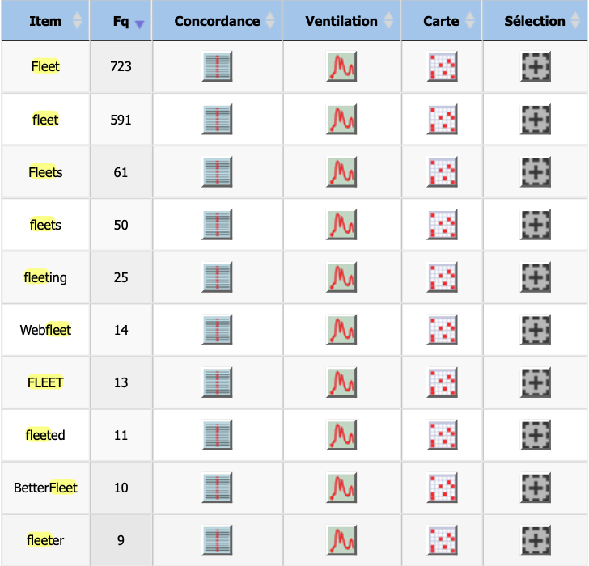
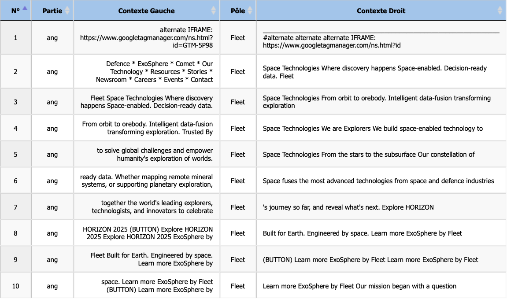

Analyse : Anglais (Fleet)
Étude morphologique et contextuelle.
L'analyse des variations du lemme fleet dans le corpus anglais met en lumière une dynamique morphologique et sémantique distincte de ses homologues français et norvégiens. Alors que ces derniers s'ancraient principalement dans la matérialité de l'objet ou du groupe, le corpus anglais témoigne d'une double tendance : la commercialisation du terme et la persistance d'un sémantisme lié à la vitesse.

Répartition des formes et variations graphiques (Capitalisation).
Un premier constat statistique interpelle : la prédominance de la forme capitalisée Fleet (723 occurrences) sur sa forme minuscule fleet (591 occurrences). Ce déséquilibre suggère une forte propension du terme à intégrer des noms propres, des titres institutionnels ou des marques déposées. Cette hypothèse est corroborée par l'émergence de composés néologiques tels que Webfleet (14 occurrences) ou BetterFleet (10 occurrences). Dans ces cas, le mot perd son autonomie référentielle pour devenir un suffixe marketing désignant des solutions logicielles de gestion, confirmant l'orientation "business" du terme en anglais contemporain.
Par ailleurs, l'outil iTrameur permet d'isoler une divergence étymologique majeure. Contrairement au français flotte qui partage sa racine avec le verbe statique flotter (rester en surface), l'anglais a conservé le sens dynamique proto-germanique de "couler" ou "passer rapidement".
Cette mémoire linguistique est visible à travers les formes dérivées fleeting (25 occurrences) et fleeted (11 occurrences). Ici, il ne s'agit plus de navires, mais de la notion temporelle d'éphémère ("a fleeting moment") ou de mouvement rapide. La présence du comparatif fleeter (9 occurrences) renforce cette distinction : là où le français dérivait vers l'objet technique (flotteur), l'anglais dérive vers la qualification de la vitesse.
Analyse du mot “fleet” en contexte

L'examen du concordancier pour la forme capitalisée Fleet confirme de manière spectaculaire l'hypothèse de la lexicalisation du terme en nom propre, soulevée lors de l'analyse morphologique.
Contrairement aux corpus norvégien et français où le mot désignait des objets tangibles ou des groupes constitués, l'extrait anglais illustre la transformation du substantif en marque commerciale (Branding). Dans cet échantillon, le terme ne renvoie plus à une "flotte" au sens générique, mais désigne l'entité "Fleet Space Technologies" (lignes 2 et 3). Le mot fonctionne ici sans déterminant, se comportant grammaticalement comme un patronyme ou une identité d'entreprise.
Le glissement sémantique est total : nous quittons le domaine maritime pour celui de l'industrie spatiale et de l'exploration minière. Le champ lexical environnant est saturé par une terminologie futuriste telle que "orbit" (orbite), "planetary exploration" (exploration planétaire) ou "ExoSphere". La notion de "flotte" survit uniquement en filigrane, suggérant implicitement une constellation de satellites ("our constellation", ligne 5), mais s'efface au profit de la promesse technologique ("intelligent data-fusion", ligne 3).
De plus, la répétition de formules sloganiques comme "Built for Earth. Engineered by space" (lignes 8 et 9) ou "ExoSphere by Fleet" démontre que le mot anglais a acquis une plasticité marketing que ses équivalents flotte ou flåte ne possèdent pas. Là où le français décrivait une réalité géopolitique inquiétante (la flotte fantôme) et le norvégien une réalité matérielle de survie (le radeau), l'anglais Fleet devient ici un concept abstrait synonyme d'innovation et de vitesse.